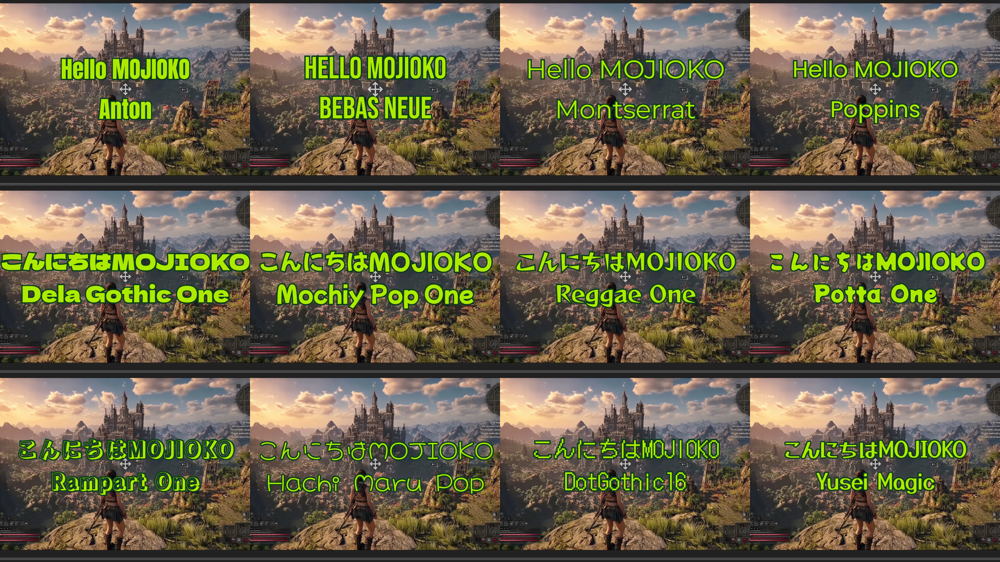

FAQ, OBS Setup, and More
MOJIOKO comes in a free version (on GitHub) and a paid version (Microsoft Store). The core features — automatic transcription, subtitle editing, subtitle burn-in, SRT/text export, and so on — are the same in both.
Subtitle fonts are chosen from a set that MOJIOKO provides (this is not a feature for loading fonts installed on your own PC). The free version includes the default font (Noto Sans JP). The paid version lets you download and use an additional set of fonts prepared by MOJIOKO. More fonts may be added in future updates.
Some features may be added exclusively to the paid version in future updates.
The paid version is available on the Microsoft Store and updates automatically, so you always have the latest version. The free version is downloaded from GitHub, and you update it manually when a new version is released.
The free version already includes everything you need to create subtitles. You can start with the free version and consider the paid version if you'd like to use the fonts MOJIOKO provides. Buying the paid version also supports development.
The paid version (Microsoft Store) lets you use the following 12 additional fonts prepared by MOJIOKO for your subtitles (4 Latin + 8 Japanese). The free version only ships with the default Noto Sans JP.

The 12 fonts, listed in the sample sheet's reading order (left to right, top to bottom — 4 Latin faces first, then 8 Japanese faces):
MOJIOKO has an experimental feature that splits an English transcription into short chunks of 2–3 words, producing the fast-paced snippet-style subtitles common on Shorts / TikTok / Reels — all the way to a draft you can edit.
Because the split is driven purely by word count (2–3 words), it does not always land on a natural semantic boundary. Hyphenated words can be split in half, and the break between a short phrase and a long noun phrase can end up somewhere unexpected. Treat the output as an editing draft rather than a finished product, and touch up the boundaries where needed.
The two videos below show the same English audio processed with (1) the regular transcription feature and (2) the experimental word-chunk feature. The subtitle style is identical; only how the subtitles are chunked differs.
The video footage used in this demo is a work by Tech Steve, published under the Creative Commons Attribution license (CC BY).
Original video: https://www.youtube.com/watch?v=OfIlTM3cyDg
To achieve high-accuracy transcription with MOJIOKO, it's important to record your microphone audio on a separate audio track during recording.
If game BGM, sound effects, and in-game voices are recorded on the same audio track as your microphone, Whisper will have difficulty distinguishing between "is this someone speaking?" or "is this music or sound effects?" This significantly reduces transcription accuracy.
By recording your microphone audio on Audio Track 2, you can then configure MOJIOKO to "transcribe only Track 2", enabling high-accuracy transcription.
※ The video file remains as a single file, but internally contains multiple audio tracks.
Load the recorded video file in MOJIOKO and select "Track 2" as the transcription target audio track. This enables high-accuracy transcription focused only on your microphone audio.
This is a warning from Microsoft's SmartScreen feature. MOJIOKO is currently not code-signed, so this warning appears on first installation.
This application's full source code is published on GitHub, and no data is transmitted externally. See MOJIOKO's privacy policy for details.
MOJIOKO can use an NVIDIA GPU to speed up transcription substantially. Long videos finish in a fraction of the time compared to CPU. A GPU is not required — MOJIOKO runs on CPU without one.
NVIDIA GPUs only. AMD and Intel GPUs are not supported (transcription automatically runs on CPU on those machines).
The latest NVIDIA generations, including RTX 50 series (Blackwell), are supported.
To use GPU acceleration, the app needs to download the CUDA / cuDNN runtime (~1.1 GB). Selecting "Use GPU" in the app triggers this one-time download automatically. You do not need to install NVIDIA's CUDA toolkit yourself beforehand.
This is a separate download from the Whisper model (~1.5–3 GB). Both are required for GPU transcription.
Once downloaded, no further downloads are needed. You can delete it from inside the app to reclaim disk space.
If you select "Use CPU," transcription always runs on the CPU even when a GPU is available. Your selection is respected.
CPU is fine for short clips or one-off jobs; GPU is worth it for long videos or repeated transcription passes.
If your NVIDIA driver is out of date, you may need to update it. Use GeForce Experience or download the latest driver from NVIDIA's site.
You can choose from 2 models in the in-app "Whisper Model" screen. We recommend large-v3.
Start here. Reliable accuracy for Japanese transcription and a wide range of audio.
Use when large-v3 feels heavy or slow, or when you want a lighter download. In Japanese transcription, turbo tends to produce more recognition errors than large-v3.
In addition to burning subtitles into video, MOJIOKO can export subtitle files and text files separately.
.txt).srt) Subtitle FileAfter transcribing, use the "Export text" button at the bottom of the editing screen.
Perfect for converting gameplay commentary to AI voice, or swapping your own voice with character voices.
If MOJIOKO's subtitle design doesn't fit your needs, you can freely customize fonts, colors, and animations in DaVinci Resolve. Timing is already handled by MOJIOKO, so you can focus on visual design.
Note: If the timing looks off after import, see the section below "Notes for using SRT files in DaVinci Resolve."
No need to burn subtitles into the video; viewers can toggle subtitles ON/OFF. Subtitles are also indexed by YouTube search for SEO benefits.
Great for gameplay recap articles, text versions of video content, etc.
MOJIOKO exports SRT files with correct timing, but when you import them into DaVinci Resolve the timing can look "off." This comes from how DaVinci Resolve works — the points below will sort it out.
By default, DaVinci Resolve timelines start at 01:00:00:00 (one hour). With this default, an SRT that starts at 00:00:00 is placed at the "one hour" position, so everything looks shifted by an hour. In the Media Pool, right-click the timeline → "Change Timeline Start Timecode" → set it to 00:00:00:00. The SRT times will then line up with what is shown.
DaVinci timecode is HH:MM:SS:FF, where the last field is frames, not milliseconds (e.g. at 30fps, 1 second = 30 frames; at 60fps, 1 second = 60 frames). So the SRT's ",900" (milliseconds) and DaVinci's ":54" (frames at 60fps) both refer to the same 0.9 seconds — the numbers look different but point to the same time. Also set the timeline fps to the same fps as the video you transcribed; if they differ, subtitles gradually drift from the video over longer durations.
Import the SRT into the Media Pool, then drag it to the start of a subtitle track (the timeline start). Each subtitle is placed at its start/end time automatically. With steps 1 and 2 set up, the subtitles keep exactly the timing you adjusted in MOJIOKO.